Operator Modder
Four operators on one skeleton (Base, Recon, Insurgent, Enforcer): modular kit, repainted zones, ten poses (hero, crouch, kneel, salute…) and three idles: calm, alert, weary. Every look is a link.
Transmission 0.3.1 · 1 October 2026 · clandestine design bureau
Escape from Tarkov meets Mount and Blade with guns
Inspired by the Antistasi mod for Arma 3. The basic idea is a PvE loop much like SP Tarkov. Instead of looting guns just for yourself, however, you play as a group of units and level up your characters and your Resistance through a Mount and Blade style overworld game. This makes gun and attachment collecting mean something at a gameplay level: stealing weapons lets you level up different characters and expand your Resistance.
The metagame then escalates from small engagements, ambushes and supply raids to all-out warfare with vehicles, as you finally drive the Invader off your island.
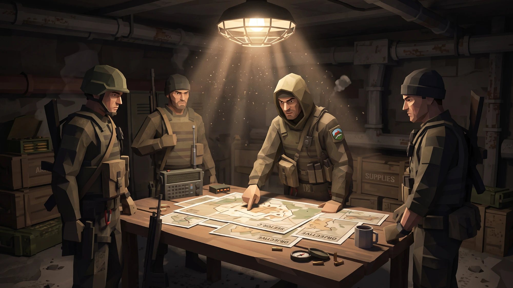
Design note This page is both the in-universe handbook and the game design document. Grey boxes like this one step outside the fiction to say what is real, what is a placeholder and what is waiting on a decision.
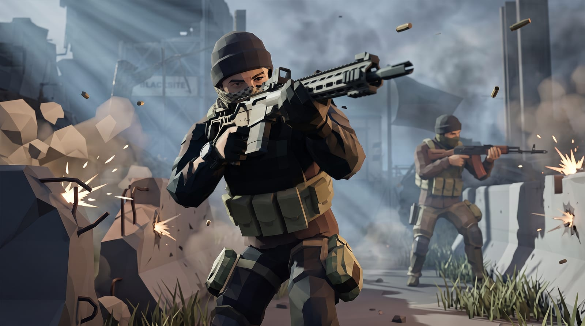
Dispatches
Each dispatch is a demo. Status is honest: live means it runs on this site; in build means partly there; planned means a drawing and a packet.
Four operators on one skeleton (Base, Recon, Insurgent, Enforcer): modular kit, repainted zones, ten poses (hero, crouch, kneel, salute…) and three idles: calm, alert, weary. Every look is a link.
AK-74M and AK-15K with twelve attachment slots, rails that stop parts overlapping,, handling stats that move as you swap, compatibility rules with reasons, finishes, camo, wear.
The quartermaster's inspector. Checks any registered model against its triangle budget and licence before it reaches a demo.
Code-built placeholders give way to cleared CC0 geometry; the G3A3 joins as third rifle, then M16, Mk14, RPK, STG44, PPSh.
Blocked on owner downloads and licence checks (packets A1, A9).
Three more operators on the same skeleton, drawn from the moodboard: hooded recon, plaid-shirt insurgent, black-kit enforcer. Patches, props and art sign-off still to come.
A ruined-checkpoint diorama, and a visualiser for how a squad believes, doubts and breaks: belief and morale made visible.
Doctrine
You are what you carry. Everything wearable or mountable is a slot with options, so a hundred loadouts come from a dozen parts.
Low-poly, faceted, flat-shaded. A silhouette must tell you who it is: hood, helmet and tubes, beanie, pack, rifle outline.
Perceived intelligence comes from communication, not computation: the enemy's decisions must be audible and legible.
Difficulty scales what the enemy knows and how fast it learns, never its health, damage or reflexes. Built for players who grew out of twitch.
Design note Pillars 3 and 4 come from the earlier AI design compendium and audience study, kept on the portfolio site at vincentdenil.com/docs/partisan-ai. Pillars 1 and 2 come from the demos and the moodboard.
Tone
Partisan uses a native three.js low-poly art style, but its animation and sound are inspired by hardcore milsim. Gunfights are loud and chaotic.
Design
Provisional Setting canon (WP-D1) is undecided, so fiction-dependent details below are placeholders. Mechanics follow the pillars and the AI compendium.
Progress is access, not power: new slots and options unlock, while enemy knowledge and learning speed scale difficulty (pillar 4). Unlock order and economy are provisional.
| Feature | State | Where |
|---|---|---|
| Weapon customiser (3 rifles, rails, stats, share codes) | Playable | Workbench |
| Operator customiser, poses, secondary motion | Playable | Operator |
| Asset viewer with triangle budgets | Playable | Viewer |
| Opening scene, advanced animations, music | Playable | Intro |
| Art styles and shaders (toon, cel, ink, clay, silhouette, Nokia LCD, PS1, night vision) | Playable | Art Style Lab |
| Enemy belief model and callouts (sight, hearing, radio; cover, suppression, flanking, retreat) | Prototype | Convoy Ambush |
| Missions, economy, factions | Provisional | Awaiting canon |
Enemies hold beliefs about the player (last seen, likely routes, noise heard), act on them, and say what they are doing. Difficulty changes belief quality and learning rate, never health or aim. Full reasoning and the audience study: AI design compendium.
Personnel
One skeleton, many people. Poses and idles are data, so every new operator inherits the whole animation set the day it exists.
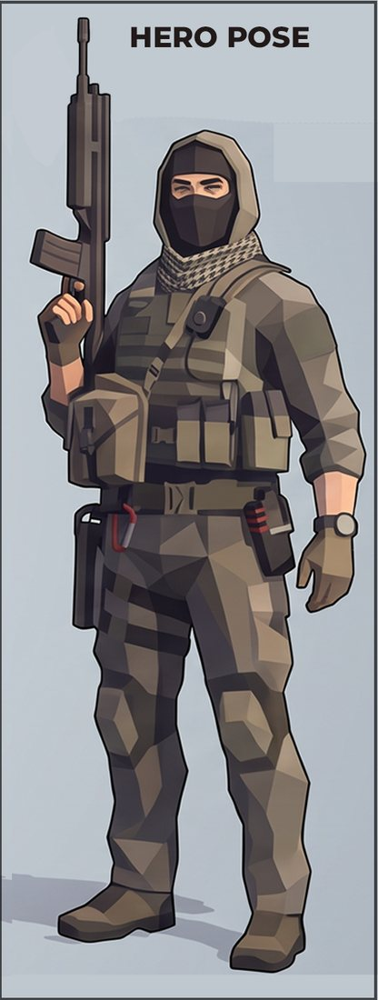
Purchased low-poly soldier. 8,646 triangles, 83 bones, 21 modular meshes. Playable now. Open
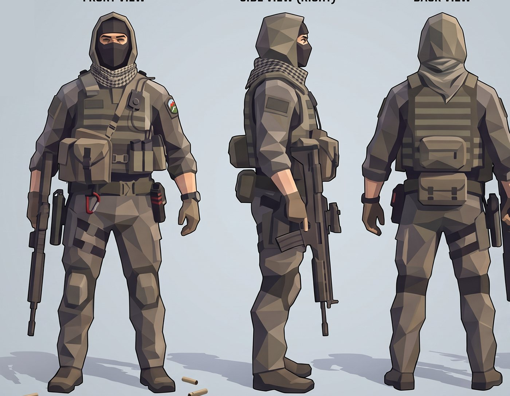
Hood and face mask, houndstooth scarf, plate carrier, chest radio. Awaiting patches and owner sign-off. Open
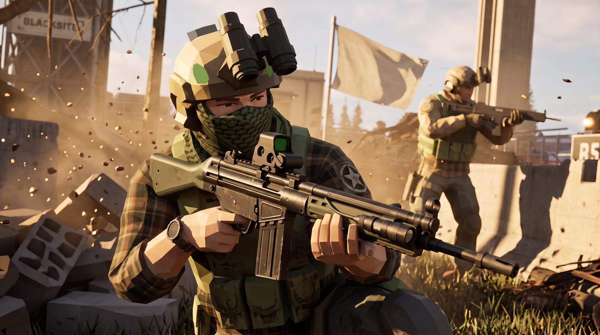
Plaid shirt, shemagh, knit beanie, AK kit. Scrappy and recognisable. Open v1
Black kit, bold pouches, beanie or NVG helmet, modern rifle. Open v1
Design note Matching keyframes to roster names is a proposal; the owner confirms it when each operator is signed off.
Art direction
Faceted low poly with painterly facets, desaturated olive and coyote, and light that does the storytelling.
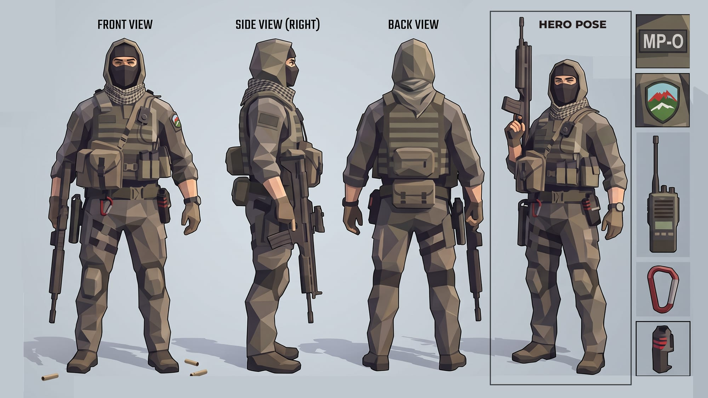
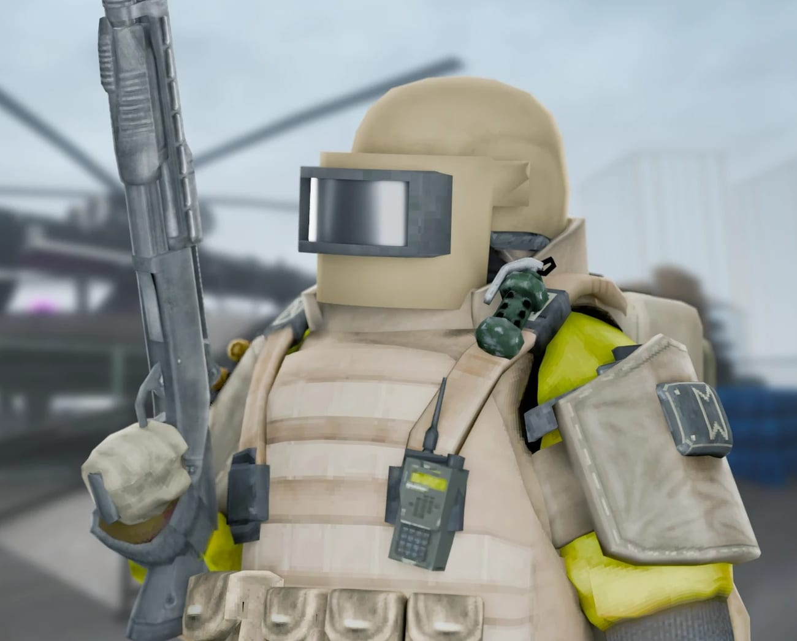
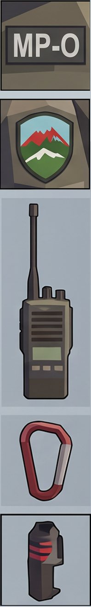
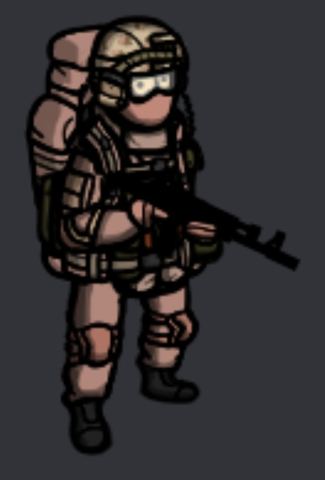
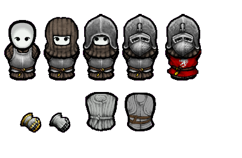
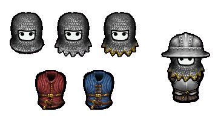
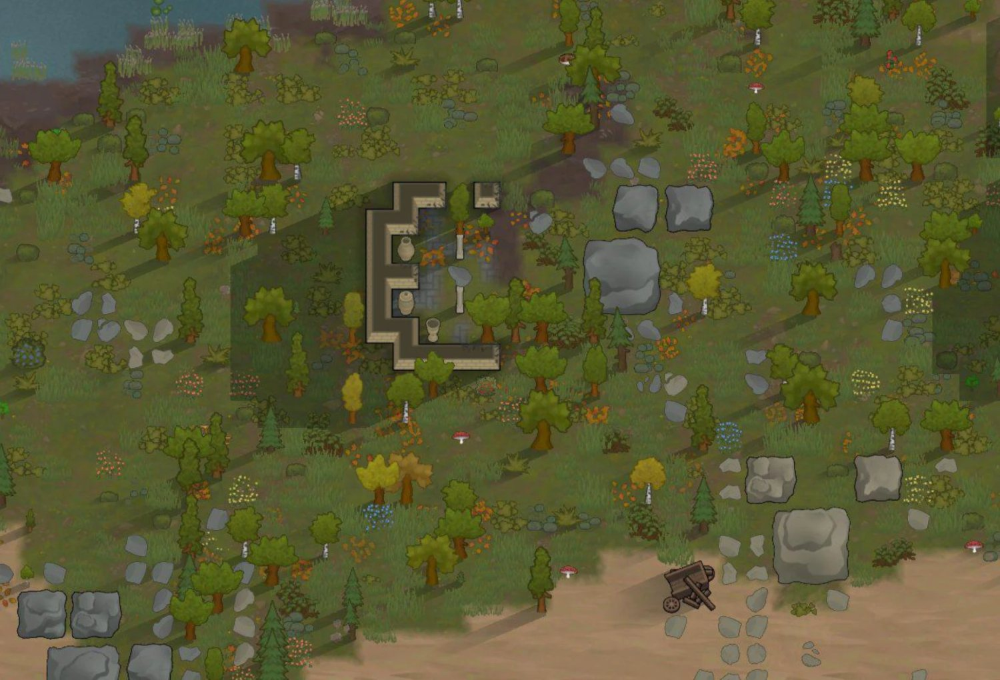
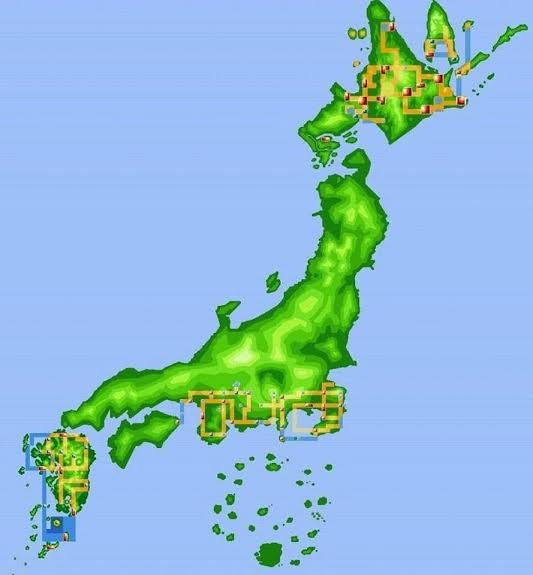
Design note The keyframes and sheet are AI-assisted concept art. Text on signs in them (e.g. "BLACKSITE") is not a naming decision. Full notes: art-direction.md.
Orders of march
Work is cut into packets small enough to finish inside one usage window of a $20 AI plan and hand to the other plan when the window runs dry. Progress below is read live from the packet list.
Open decisions (1) Setting canon: the earlier premise is Yantis, 2012, a prologue to a WW2044 timeline; the modern low-poly kit needs a reconciling decision. (2) Roster naming from the keyframes. (3) Credits and licences: out of scope, see the GitHub documentation. (4) When to drop noindex.
Quartermaster
| Item | Standard | Check |
|---|---|---|
| Operator + equipment | ≤ 15,000 triangles, ≤ 60 draw calls | Readout in the Operator Modder; automated test |
| Weapon + attachments | ≤ 30,000 triangles | Asset Viewer; register budget |
| Frame rate | Goal: 60 fps desktop, 30 fps mid-range phone | Adaptive resolution built in; device acceptance pending (WP-Q2) |
| Accessibility | Keyboard, focus, reduced motion, text contrast, WCAG 2.2 AA target | Audit pending (WP-Q1) |
| Assets | CC0 or CC BY 4.0 downloads only; everything registered | Register audit fails the build |
| Privacy | No cookies, no analytics, no third-party requests | Site check; vendored three.js |
| Stats | Illustrative handling values, not real-world data | Labelled in the demos |
| Build | Relative URLs, allowlist deploy, link-checked | CI on every push |